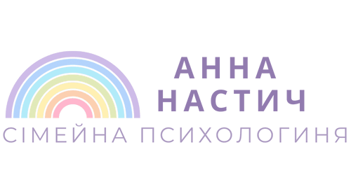

На етапі планування сім'ї
- Складання портрета партнера
- Розвиток діалогу в стосунках
- Спільна уява про шлюб
- Страхи вагітності, материнства/батьківства
- Важливість статусу (заміжня / одружений)
- Опрацювання різних моделей родини



Створюю безпечний простір, де ви: долаєте тривоги, проблеми, зцілюєте біль, повертаєте свій ресурсний стан та веселкові кольори життя.
Акція для нових клієнтів: кожен другий тиждень місяця перша діагностична консультація — безкоштовно!
Мені 70 років. Понад 40 років практики. Пенсіонерка, яка продовжує консультувати, бо люблю людей, їхній розвиток і досягнення. Кожен клієнт для мене окремий Всесвіт, а їхні щасливі життя мене надихають. В шлюбі 45 років та маємо дорослих дітей, троє онуків. У вільний час малюю, танцюю, співаю, вирощую рослини та плекаю свій сад і город. Окрім двох дипломів, пройшла тренінги з психодрами, символдрами, транзактного аналізу, арт-терапії, системних розстановок, роботи з родовими сценаріями та КПТ. Продовжую професійний розвиток: курси, тренінги, особиста психотерапія й супервізія.


Ви отримаєте:
Індивідуальний підхід, компетентну думку фахівця, атмосферу прийняття
та довіри, гарантовану конфіденційність, глибоке пропрацювання
проблеми


Тоді психолог потрібен лише, якщо ви хочете глибше зрозуміти себе, сенс життя та розвитку 😂🤩💖🌈
Оберіть підходящий формат роботи. Всі консультації проводжу онлайн та офлайн. Консультації веду укр/ рос мовою за бажанням клієнта.
Первинна оцінка та визначення напрямку роботи
Персональна робота з індивідуальними запитами
Робота з парами або батьками з дітьми
Глибока робота з особистістю та експертністю
Індивідуальна переписка в Вайбер, Телеграм
Консультації в кабінеті (Дарниця)
Дівчата 18+ 💛
Якщо відчуваєте втому від постійної напруги війни, сімейних непорозумінь, втрат чи просто життя «на автоматі» — вам не потрібно залишатися з цим наодинці.333 грн/місяць
Це не терапія, а дружня підтримка від фахівця, яка може стати вашим щотижневим ресурсом.
ЗаписатисьЖиві історії клієнтів про турботу, підтримку та трансформації. Ще більше відгуків у моєму Instagram.

Друзі всім рекомендую психолога Анну Юріївну. Моє життя почало змінюватися після зустрічі з Анною Юріївною. Питання які заважали мені спокійно жити, після зустрічі з психологом,легко находили відповіді! Не вагайтеся,скоріше пишіть Анні Юріївні❤️

Дуже мудро! Я ніколи так не думала, нажаль. Тепер завдяки вам, я змінила свою думку, і буду робити тільки так, я буду дбати про себе, щоб потім, коли я буду наповнена, в мене було чим поділитися з моїм коханим, з дітьми можливо. В мене буде бажанням, енергія, настрій.


Знову після багатьох років проявила себе пухлина головного мозку ускладненням у рухах і часовою втратою зору. Трохи злякана. Не справляюся. Чи можете допомогти як 10 років назад?


В роботі використовую інтеграційний підхід — поєдную методи з різних психологічних напрямків (транзактний аналіз, психо драма, Арт-терапія, символ драма, гештальт, КПТ, PSY- 2.0, метод звукової терапії), зважаючи на індивідуальні потреби та обставини клієнта. Це дозволяє гнучко підбирати вправи, методи, завдання та техніки під ваш запит.